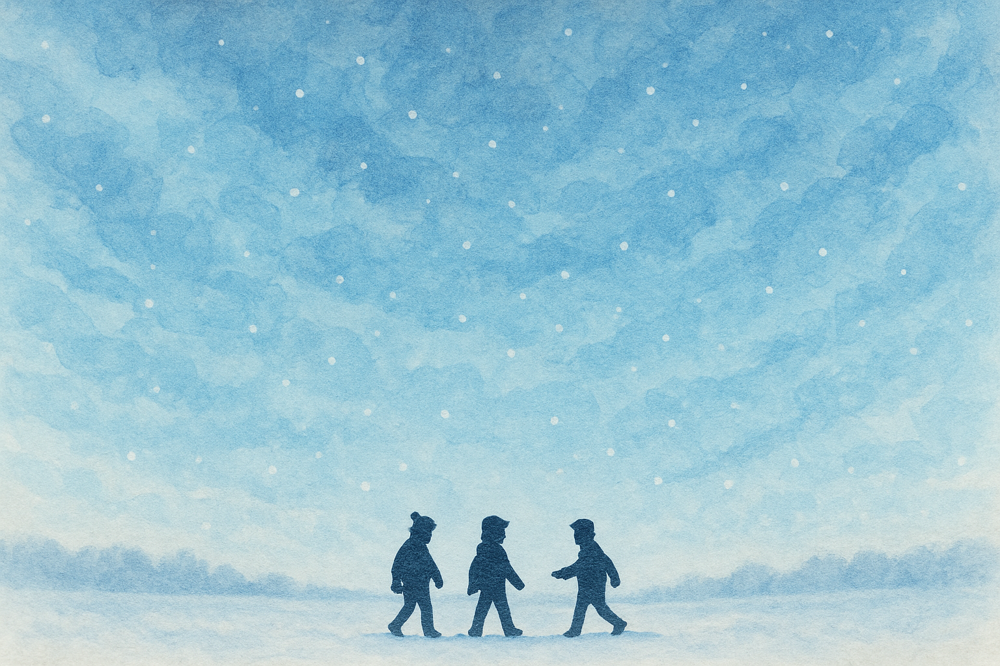

ボイスドラマ「いつか青空をゆく君たちへ」感想
「いつか青空をゆく君たちへ」(いつ君)は、「突如として出現した謎の菌糸類によって人口のおおそよ半分以上を死滅させられた」世界を描いたボイスドラマです。このページでは、まだこのボイスドラマを聴いていない人に向けて、この作品の魅力を紹介します。(じゃっかんネタバレあり)
公式ページわたくしことスナイパー、いわゆるポストアポカリプス的な世界、人類の多くが死滅してしまった後の世界を描いた物語が非常にツボでありまして、ゲームで言うとファイナルファンタジー6の崩壊後や、映画で言うとウォーターワールドのような世界には、非常にそそられる性質の人間です。
いつ君の世界も、まさにこれから滅亡せんとしているのですが、この物語、ちょっと変わっています。雰囲気が、まるで暗くありません。ほのぼのとしているのです。人類、半分死滅。この一言はもうただごとではなく、インフラから行政手続、日常生活のあらゆることまで、それまでの水準を維持できようはずもありません。きっとこの世界の人々は、いま我々があたり前に手にしている生活にすらアクセスできない厳しい生活、朽ち果てた道路や建造物、インフラの上で生活している可能性があります。とは言え、時は西暦2645年、それでもなんとか生きていけるだけのテクノロジーはあるのでしょう。きっと人々はロボットなどの助けを借りて、それなりにこの厳しい世界で暮らしています。ですが、BGMは終始穏やかでチルな雰囲気ですし、リスナーの精神に思いきり傷を負わせてやろうという作者の意思はあまり感じられません。似た作品はなにかと問われれば、一見ファンシーなのだけど、実は……な魔法少女まどかマギカや、ぷにぷにして可愛いキャラクターで癒し系かと思えばメンタルブレイクなメイドインアビス、それらをマイルドにした作風…と言えるやもしれません。
そんな一見ライトな雰囲気を持ついつ君は、複雑な構造を持つ物語でもあります。その聴き味は、エンターテイメントというよりは、文学に近いと言えるかもしれません。多数のキャラクターが多くは語られぬ過去を持ち、それらの因縁が彼らの動機となって現在に交錯します。おそらくわかりやすい部類の作品ではないです。それだけに、かなり集中して聞かなければどのような因果で物語が流れているのか把握するのは難しいかもしれません。わたし自身、何回も聴き返すことで、ようやく物語の構造が少しずつ理解できてきました。
わたしの好きなゲームにロマンシングサガというRPGがあります。ロマサガの何がいいって、その世界に詰め込まれたさまざまな物語が、断片的にしか語られないんですよ。ある日突如村ごと消えた遊牧民が、実は古代人の末裔らしいということが仄めかされたり、七英雄という世界を救った歴史上の人物たちに、いったい過去何があったのかとか。そういったロマン溢れる遠い時代の話の輪郭が、人々が語る断片を繋ぎ合わせることで、少しずつ浮かび上がってくる。これがすごく心をくすぐるわけです。そして、いつ君もロマサガと似たところがあります。キャラクターたちが語るセリフの断片を繋ぎ合わせることで、段々と何が彼らを突き動かしているのかといったことが見えてくる、あるいは想像することができるのです。主要人物ではないどころか物語には名前しか登場しないのですが、主人公ハルを含め多くの人たちに多大な影響を与えたであろうクロとはどのような人物だったのだろう、とか、ハルの昔の友達だったアキとナツはどのような少年時代を過ごしていたのだろう、とか、聴き手が補完するための余地もたくさんたくさん用意されています。この文の主題ではないので深くは触れませんが、記憶を失くしてしまったハルと、旧友アキのハルへの態度がめちゃくちゃエモくてですねえ、個人的にいつ君で一番好きなキャラです（キャストの田中さんの芝居がこれまたいいんだ）。
さてさて、いつ君がどんな作品なのか伝わりましたでしょうか。噛めば噛むほど味が出てくる作品ですから、一度聴いて終わりにするのはもったいないですよ。